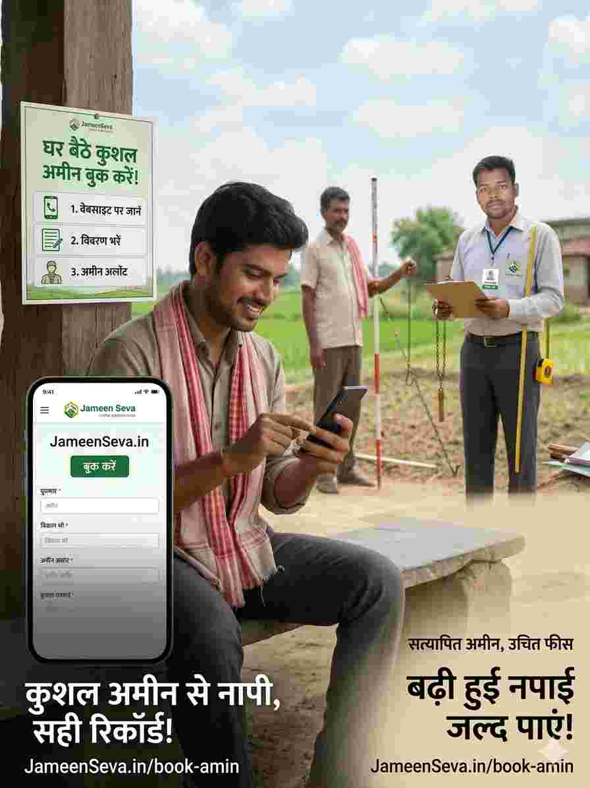

बिहार में चल रहे विशेष जमीन सर्वे के बीच किसानों के लिए सबसे बड़ी समस्या एक कुशल और ईमानदार अमीन (Amin) ढूंढना है। अक्सर गांव में अमीन समय पर नहीं मिलते या भारी फीस मांगते हैं। इसी समस्या को देखते हुए Jameen Seva पोर्टल ने ऑनलाइन अमीन बुकिंग की सुविधा शुरू की है।

स्टेप 1: सबसे पहले JameenSeva.in/book-amin पेज पर जाएं।
स्टेप 2: अपना नाम, मोबाइल नंबर और जमीन की जानकारी (खाता/खेसरा नं) भरें।
स्टेप 3: अपनी बुकिंग सबमिट करें। आपको एक Booking ID मिलेगी।
स्टेप 4: हमारी टीम आपके ब्लॉक के नजदीकी एक्सपर्ट अमीन को आपका ऑर्डर फॉरवर्ड करेगी, जो आपसे 24 घंटे के अंदर संपर्क करेंगे।
Jameen Seva के जरिए बुक किए गए अमीन नपाई के बाद आपको एक डिजिटल रिपोर्ट या कच्चा नक्शा भी प्रदान करते हैं, जिसे आप भविष्य के लिए सुरक्षित रख सकते हैं। इससे सर्वे के समय आपको अपनी जमीन का रकबा साबित करने में आसानी होती है।
अमीन भाइयों के लिए सूचना: अगर आप एक अमीन हैं और हमारे साथ जुड़ना चाहते हैं, तो यहाँ रजिस्ट्रेशन करें और अपना डिजिटल आईडी कार्ड प्राप्त करें।